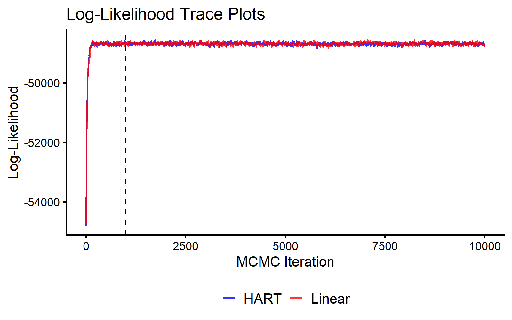
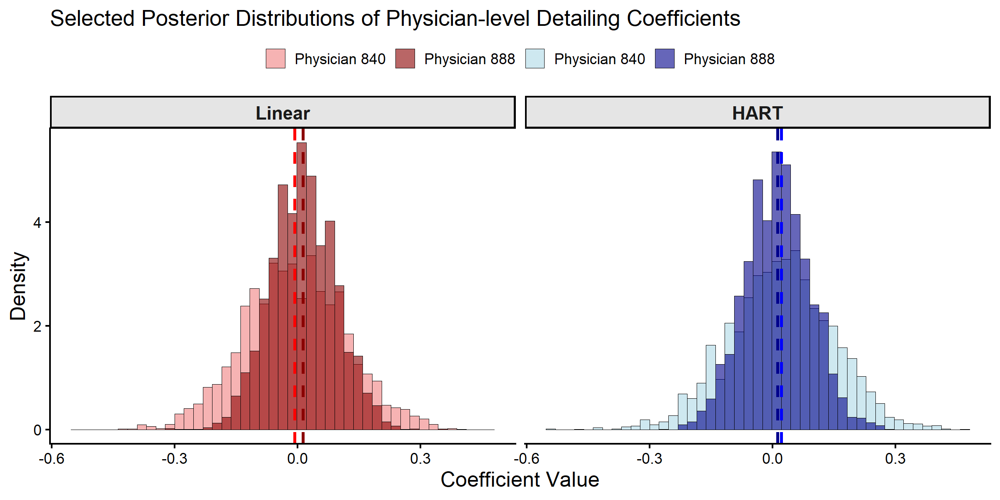
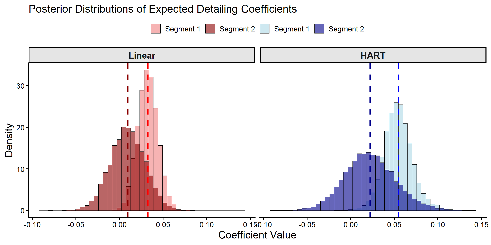

Hierarchical Negative Binomial Model
2025-06-29
bayesm-HART-negbin.RmdIntroduction
This vignette estimates a hierarchical negative binomial model with
HART priors using bayesm.HART, applied to the
detailing pharmaceutical panel dataset from
bayesm. The HART prior specifies the representative
physician as a sum-of-trees function of observed characteristics,
Delta(Z_i), whereas the conventional specification uses the
linear form Delta^\\top Z_i.
Pharmaceutical Detailing Data
The detailing dataset contains a balanced panel of 1,000
physicians observed over 23 months. For each physician-month, we observe
prescriptions written (scripts), detailing visits
(detailing), and lagged prescriptions
(lagged_scripts). Physician demographics
(generalphys, specialist,
mean_samples) serve as covariates
.
# Load dependencies
library(bayesm.HART)
library(bayesm)
# Data wrangling and plotting utilities
library(tidyr)
library(dplyr)
library(ggplot2)
# Load pharmaceutical detailing data
data(detailing)
counts <- detailing[["counts"]]
demo <- detailing[["demo"]]
# Build per-physician regdata
phys_ids <- demo[["id"]]
nreg <- length(phys_ids)
regdata <- vector("list", length = nreg)
for (i in 1:nreg) {
si <- counts[counts[["id"]] == phys_ids[i], ]
y <- si[["scripts"]]
X <- cbind(1, as.matrix(si[, c("detailing", "lagged_scripts")]))
colnames(X) <- c("Intercept", "Detailing", "Lagged Scripts")
regdata[[i]] <- list(y = y, X = X)
}
# Physician-level demographics as Z (omit id column)
Z <- as.matrix(demo[, -1])
# De-mean continuous columns only; leave binary indicators as-is
Z[, "mean_samples"] <- Z[, "mean_samples"] - mean(Z[, "mean_samples"])
# Final data object
Data <- list(regdata = regdata, Z = Z)MCMC Estimation
We fit both the HART model (Wiemann, 2025) and a conventional linear
hierarchical model (Rossi et al., 2009). Both estimate
physician-specific coefficients
via hierarchical negative binomial regression with shared overdispersion
;
they differ only in their specification of
.
Note that rhierNegbinRw uses Metropolis-Hastings (the
negative binomial likelihood is not conjugate), so a longer chain is
recommended.
# MCMC parameters
R <- 10000
burn <- 1000
keep <- 1
Mcmc <- list(R = R, keep = keep)
model_cache_file <- file.path(
vignette_cache_dir,
sprintf("detailing-negbin-R%s-keep%s.rds", R, keep)
)
model_cache_ok <- FALSE
if (file.exists(model_cache_file)) {
model_cache <- tryCatch(readRDS(model_cache_file), error = function(e) NULL)
model_cache_ok <- !is.null(model_cache) &&
!is.null(model_cache$out_hart) && !is.null(model_cache$out_lin)
if (model_cache_ok) {
out_hart <- model_cache$out_hart
out_lin <- model_cache$out_lin
cat("Loaded cached model draws from:", model_cache_file, "\n")
}
}
if (!model_cache_ok) {
out_hart <- bayesm.HART::rhierNegbinRw(
Data = Data, Mcmc = Mcmc,
Prior = list(
ncomp = 1,
bart = list(num_trees = 20) # new HART prior parameters
),
r_verbose = FALSE
)
out_lin <- bayesm.HART::rhierNegbinRw(
Data = Data, Mcmc = Mcmc,
Prior = list(ncomp = 1),
r_verbose = FALSE
)
saveRDS(
list(out_hart = out_hart, out_lin = out_lin, generated_at = Sys.time()),
model_cache_file
)
cat("Saved model draws cache to:", model_cache_file, "\n")
}We use the log-likelihood trace as a basic MCMC diagnostic.
burnin_draws <- ceiling(burn / keep)
mcmc_data <- data.frame(
Iteration = (1:length(out_hart$loglike)) * keep,
HART = out_hart$loglike,
Linear = out_lin$loglike
) %>%
pivot_longer(cols = c("HART", "Linear"), names_to = "Model", values_to = "LogLikelihood")
ggplot(mcmc_data, aes(x = Iteration, y = LogLikelihood, color = Model)) +
geom_line(alpha = 0.8) +
geom_vline(xintercept = burn, linetype = "dashed", color = "black") +
scale_color_manual(values = c("HART" = "blue", "Linear" = "red")) +
theme_classic(base_size = 16) +
labs(title = "Log-Likelihood Trace Plots", x = "MCMC Iteration", y = "Log-Likelihood") +
theme(legend.title = element_blank(),
legend.position = "bottom",
legend.text = element_text(size = 16))
MCMC Traceplot of the Log Likelihood.
Posterior Inference about Physician-level Coefficients
We compare posterior distributions of the detailing coefficient for two physicians: Physician 840 (GP, no samples) and Physician 888 (specialist, moderate samples).
selected_phys <- c(840, 888)
coef_indx <- 2 # "Detailing" coefficient
coef_name <- "Detailing"
# Create a combined factor for filling histograms
beta_draws <- bind_rows(
as.data.frame(t(out_hart$betadraw[selected_phys, coef_indx, -c(1:burnin_draws)])) %>%
mutate(Model = "HART", Draw = row_number()),
as.data.frame(t(out_lin$betadraw[selected_phys, coef_indx, -c(1:burnin_draws)])) %>%
mutate(Model = "Linear", Draw = row_number())
)
colnames(beta_draws)[1:2] <- paste("Physician", selected_phys)
beta_draws_long <- beta_draws %>%
pivot_longer(
cols = starts_with("Physician"),
names_to = "Physician",
values_to = "Coefficient"
) %>%
mutate(
Model = factor(Model, levels = c("Linear", "HART")), # Control facet order
Group = interaction(Physician, Model)
)
# Define colors
model_fills <- c(
"Physician 840.Linear" = "lightcoral", "Physician 888.Linear" = "darkred",
"Physician 840.HART" = "lightblue", "Physician 888.HART" = "darkblue"
)
model_colors <- c(
"Physician 840.Linear" = "red", "Physician 888.Linear" = "darkred",
"Physician 840.HART" = "blue", "Physician 888.HART" = "darkblue"
)
# Calculate means
means <- beta_draws_long %>%
group_by(Group, Model) %>%
summarise(mean_val = mean(Coefficient), .groups = "drop")
ggplot(beta_draws_long, aes(x = Coefficient, fill = Group)) +
geom_histogram(aes(y = after_stat(density)), alpha = 0.6, bins = 45,
position = "identity", color = "black", linewidth = 0.3) +
geom_vline(data = means, aes(xintercept = mean_val, color = Group),
linetype = "dashed", linewidth = 1.2) +
facet_wrap(~Model) +
scale_fill_manual(name = "Physician", values = model_fills,
breaks = c("Physician 840.Linear", "Physician 888.Linear",
"Physician 840.HART", "Physician 888.HART"),
labels = c("Physician 840", "Physician 888",
"Physician 840", "Physician 888")) +
scale_color_manual(values = model_colors, guide = "none") +
theme_classic(base_size = 16) +
theme(axis.title = element_text(size = 18), legend.position = "top",
legend.title = element_blank(),
strip.text = element_text(size = 16, face = "bold"),
strip.background = element_rect(fill = "grey90", color = "black")) +
labs(title = paste("Selected Posterior Distributions of Physician-level", coef_name, "Coefficients"),
x = "Coefficient Value", y = "Density")
Posterior Distributions of Physician-level Detailing Coefficients.
# Extract posterior draws for the selected physicians and coefficient
hart_draws_840 <- out_hart$betadraw[840, coef_indx, -c(1:burnin_draws)]
hart_draws_888 <- out_hart$betadraw[888, coef_indx, -c(1:burnin_draws)]
lin_draws_840 <- out_lin$betadraw[840, coef_indx, -c(1:burnin_draws)]
lin_draws_888 <- out_lin$betadraw[888, coef_indx, -c(1:burnin_draws)]
# Create summary table
summary_results <- data.frame(
Model = c("Linear", "Linear", "HART", "HART"),
Physician = c("840", "888", "840", "888"),
Mean = c(mean(lin_draws_840), mean(lin_draws_888),
mean(hart_draws_840), mean(hart_draws_888)),
SD = c(sd(lin_draws_840), sd(lin_draws_888),
sd(hart_draws_840), sd(hart_draws_888))
)
print(summary_results, digits = 3)
#> Model Physician Mean SD
#> 1 Linear 840 -0.00713 0.1242
#> 2 Linear 888 0.01337 0.0791
#> 3 HART 840 0.02199 0.1263
#> 4 HART 888 0.01213 0.0791Both models produce similar individual-level estimates for the selected physicians. With 23 monthly observations per physician, the individual likelihood contributes most of the posterior information at the physician level in this application.
Posterior Inference on Physician Segment Coefficients
The models differ in how they characterize the expected coefficient
for a representative physician with demographics
.
We compare these segment-level predictions for the same two physicians,
using the predict function.
# We predict for all physicians
DeltaZ_hat_hart <- predict(out_hart, newdata = list(Z = Z), type = "DeltaZ+mu", burn = burnin_draws)
DeltaZ_hat_lin <- predict(out_lin, newdata = list(Z = Z), type = "DeltaZ+mu", burn = burnin_draws)
segment_phys <- selected_phys # Same physicians as individual-level analysis
deltaZ_draws <- bind_rows(
as.data.frame(t(DeltaZ_hat_hart[segment_phys, coef_indx, ])) %>%
mutate(Model = "HART", Draw = row_number()),
as.data.frame(t(DeltaZ_hat_lin[segment_phys, coef_indx, ])) %>%
mutate(Model = "Linear", Draw = row_number())
)
colnames(deltaZ_draws)[1:2] <- c("Segment 1", "Segment 2")
deltaZ_draws_long <- deltaZ_draws %>%
pivot_longer(
cols = starts_with("Segment"),
names_to = "Physician_Segment",
values_to = "Coefficient"
) %>%
mutate(
Model = factor(Model, levels = c("Linear", "HART")), # Control facet order
Group = interaction(Physician_Segment, Model)
)
# Update color definitions to match segment terminology
model_fills <- c(
"Segment 1.Linear" = "lightcoral", "Segment 2.Linear" = "darkred",
"Segment 1.HART" = "lightblue", "Segment 2.HART" = "darkblue"
)
model_colors <- c(
"Segment 1.Linear" = "red", "Segment 2.Linear" = "darkred",
"Segment 1.HART" = "blue", "Segment 2.HART" = "darkblue"
)
# Calculate means
means_deltaZ <- deltaZ_draws_long %>%
group_by(Group, Model) %>%
summarise(mean_val = mean(Coefficient), .groups = "drop")
ggplot(deltaZ_draws_long, aes(x = Coefficient, fill = Group)) +
geom_histogram(aes(y = after_stat(density)), alpha = 0.6, bins = 45,
position = "identity", color = "black", linewidth = 0.3) +
geom_vline(data = means_deltaZ, aes(xintercept = mean_val, color = Group),
linetype = "dashed", linewidth = 1.2) +
facet_wrap(~Model) +
scale_fill_manual(name = "Physician Segment", values = model_fills,
breaks = c("Segment 1.Linear", "Segment 2.Linear",
"Segment 1.HART", "Segment 2.HART"),
labels = c("Segment 1", "Segment 2",
"Segment 1", "Segment 2")) +
scale_color_manual(values = model_colors, guide = "none") +
theme_classic(base_size = 16) +
theme(axis.title = element_text(size = 18), legend.position = "top",
legend.title = element_blank(),
strip.text = element_text(size = 16, face = "bold"),
strip.background = element_rect(fill = "grey90", color = "black")) +
labs(title = "Posterior Distributions of Expected Detailing Coefficients",
x = "Coefficient Value", y = "Density")
Posterior Distributions of Expected Physician Segment Coefficients.
# Extract expected coefficients for the two segments
deltaZ_summary <- data.frame(
Segment = c("Segment 1 (GP, No Samples)",
"Segment 2 (Specialist, Moderate Samples)"),
Linear_Mean = c(mean(DeltaZ_hat_lin[840, coef_indx, ]),
mean(DeltaZ_hat_lin[888, coef_indx, ])),
Linear_SD = c(sd(DeltaZ_hat_lin[840, coef_indx, ]),
sd(DeltaZ_hat_lin[888, coef_indx, ])),
HART_Mean = c(mean(DeltaZ_hat_hart[840, coef_indx, ]),
mean(DeltaZ_hat_hart[888, coef_indx, ])),
HART_SD = c(sd(DeltaZ_hat_hart[840, coef_indx, ]),
sd(DeltaZ_hat_hart[888, coef_indx, ]))
)
print(deltaZ_summary, digits = 3)
#> Segment Linear_Mean Linear_SD HART_Mean
#> 1 Segment 1 (GP, No Samples) 0.03234 0.0117 0.0548
#> 2 Segment 2 (Specialist, Moderate Samples) 0.00941 0.0201 0.0224
#> HART_SD
#> 1 0.0171
#> 2 0.0297
# Calculate differences between segments
cat("\nDifferences between segments:\n")
#>
#> Differences between segments:
cat("Linear approach difference:",
deltaZ_summary$Linear_Mean[2] - deltaZ_summary$Linear_Mean[1], "\n")
#> Linear approach difference: -0.02292841
cat("HART approach difference:",
deltaZ_summary$HART_Mean[2] - deltaZ_summary$HART_Mean[1], "\n")
#> HART approach difference: -0.03242228For the selected physicians, segment-level posterior locations are
consistent with the corresponding individual-level posteriors shown
above. The linear specification restricts segment means to an affine
function of demographics, while HART allows nonlinear and interaction
structure in Z through Delta(Z).
References
Rossi, Peter E., Greg M. Allenby, and Robert McCulloch (2009). Bayesian Statistics and Marketing. Reprint. Wiley Series in Probability and Statistics. Chichester: Wiley.
Wiemann, Thomas (2025). “Personalization with HART.” Working paper.